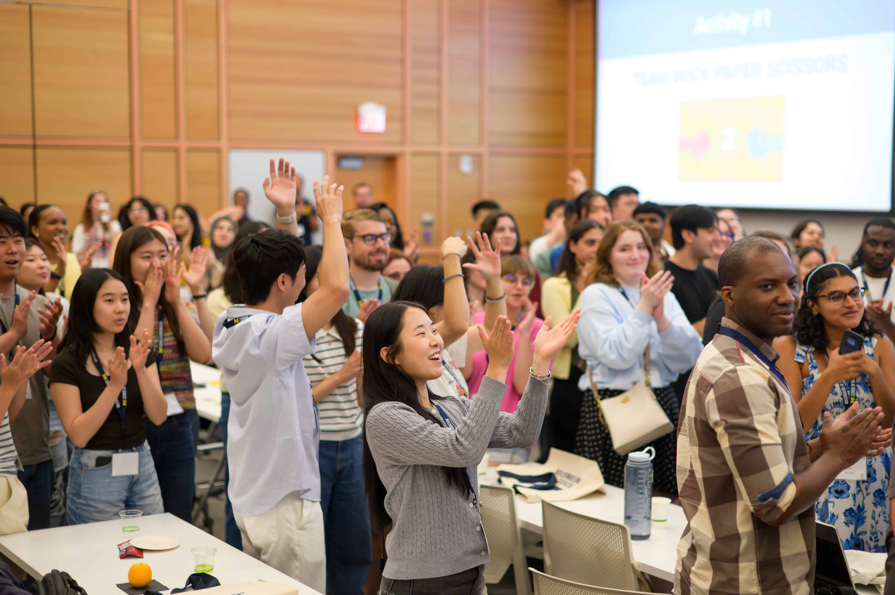
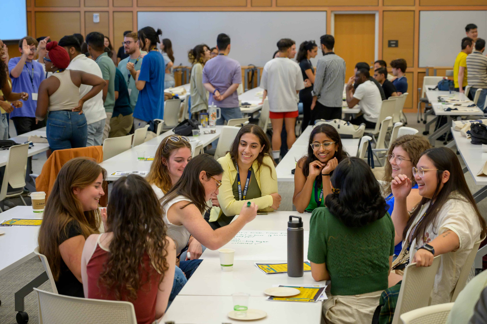
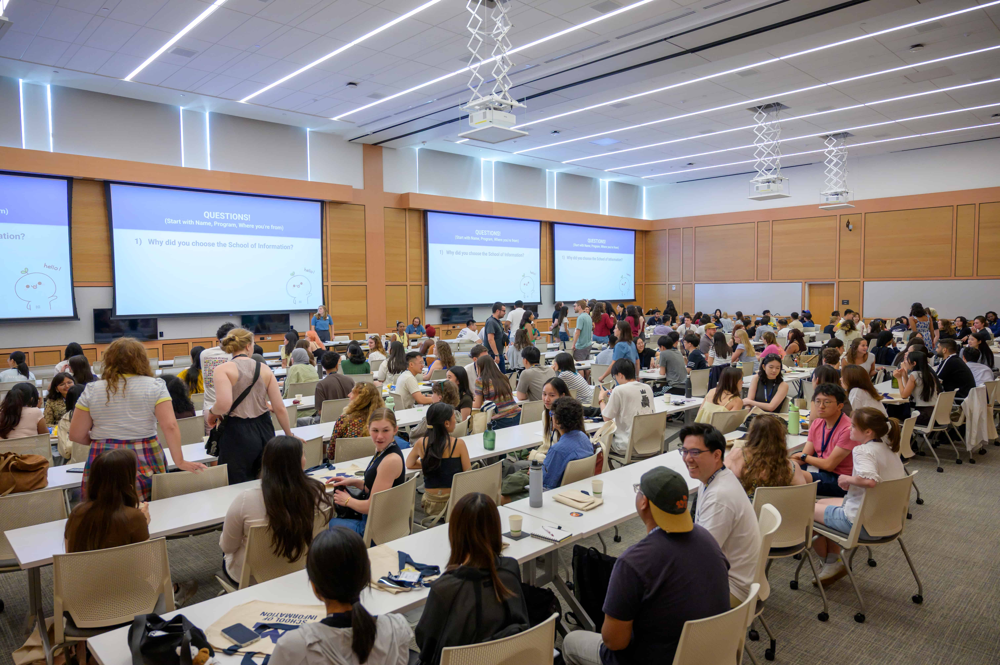

Ready to take the next step toward your future career? The UMSI Career Development Resource Hub is your one-stop shop for trusted guidance, practical tools, and the latest information to help you thrive as a student and job-seeker.



Quick Tips for Success
Networking is essential for career success because it helps you build relationships and discover hidden opportunities.
- Be Genuine: Focus on building real relationships, not just collecting contacts.
- Follow Up: Send a thank-you note within 24 hours of meeting someone.
- Use U-M Resources: Leverage UMSI events and LinkedIn to find alumni connections.
Networking FAQ
Do I need to network if I don’t know what career I want?
Yes! Networking helps you explore different paths and learn about options you may not have considered.
How do I start a networking conversation?
Be curious—ask about the other person’s career or advice. Use email templates and informational interviews for guidance.
Is it okay to network with other students?
Absolutely. Peers often share leads, advice, and connections.
Connect with the UMSI Career Development Office
The UMSI Career Development Office (CDO) offers personalized support through appointments, events, and resource guides. Visit the CDO website or find us on campus to learn more, schedule a coaching session, or just say hello.